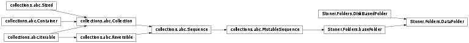

Stoner.DataFolder¶
-
class
Stoner.DataFolder(*args, **kargs)[source]¶ Provide an interface to manipulating lots of data files stored within a directory structure on disc.
By default, the members of the DataFolder are isntances of
Stoner.Data. The DataFolder emplys a lazy open strategy, so that files are only read in from disc when actually needed.Methods
__init__(*args, **kargs)add_group(key)Add a new group to the current baseFolder with the given key. append(value)Append an item to the folder object clear()Clear the subgroups. concatentate([sort, reverse])Concatentates all the files in a objectFolder into a single metadataObject like object. count(name)Provide a count method like a sequence. extend(values)S.extend(iterable) – extend sequence by appending elements from the iterable extract(*metadata, **kargs)Walks through the terminal group and gets the listed metadata from each file and constructsa replacement metadataObject. file(name, value[, create, pathsplit])Recursively add groups in order to put the named value into a virtual tree of baseFolder.filter([filter, invert, copy])Filter the current set of files by some criterion filterout(filter[, copy])Synonym for self.filter(filter,invert=True) flatten([depth])Compresses all the groups and sub-groups iunto a single flat file list. gather([xcol, ycol])Collects xy and y columns from the subfiles in the final group in the tree and builds iunto a Stoner.Core.metadataObjectget(name[, default])Return either a sub-group or named object from this folder. getlist([recursive, directory, flatten])Scans the current directory, optionally recursively to build a list of filenames group(key)Take the files and sort them into a series of separate objectFolder objects according to the value of the key index(name[, start, end])Provide an index method like a sequence. insert(ix, value)Implements the insert method with the option to append as well. items()Return the key,value pairs for the subbroups of this folder. keys()Return the keys used to access the sub-=groups of this folder. make_name([value])Construct a name from the value object if possible. next()Python 2.7 style iterator function. pop([name, default])Return and remove either a subgroup or named object from this folder. popitem()Return the most recent subgroup from this folder. prune()Remove any groups from the objectFolder (and subgroups). remove(value)S.remove(value) – remove first occurrence of value. reverse()S.reverse() – reverse IN PLACE save([root])Save the entire data folder out to disc using the groups as a directory tree, calling the save method for each file in turn. select(*args, **kargs)A generator that can be used to select particular data files from the objectFolder setdefault(k[, d])Return or set a subgroup or named object. slice_metadata(key[, output])Return an array of the metadata values for each item/file in the top level group sort([key, reverse])Sort the files by some key unflatten()Takes a file list an unflattens them according to the file paths. unload(name)Removes the instance from memory without losing the name in the Folder. update(other)Update this folder with a dictionary or another folder. values()Return the sub-groups of this folder. walk_groups(walker, **kargs)Walks through a heirarchy of groups and calls walker for each file. zip_groups(groups)Return a list of tuples of metadataObjects drawn from the specified groups